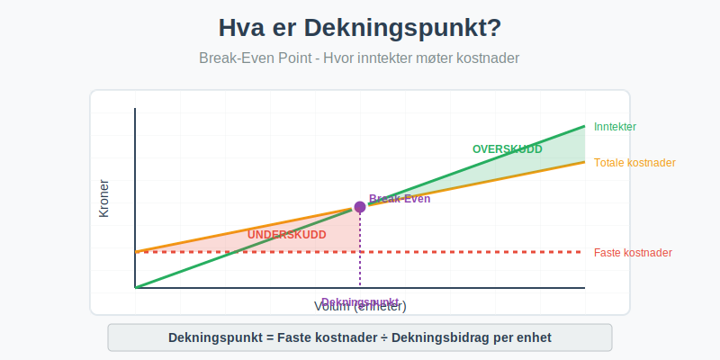
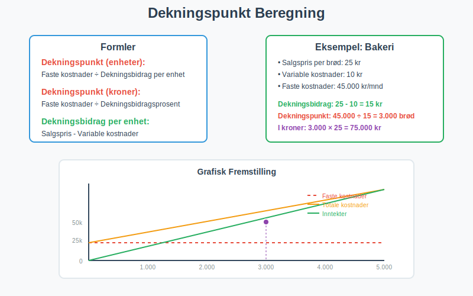
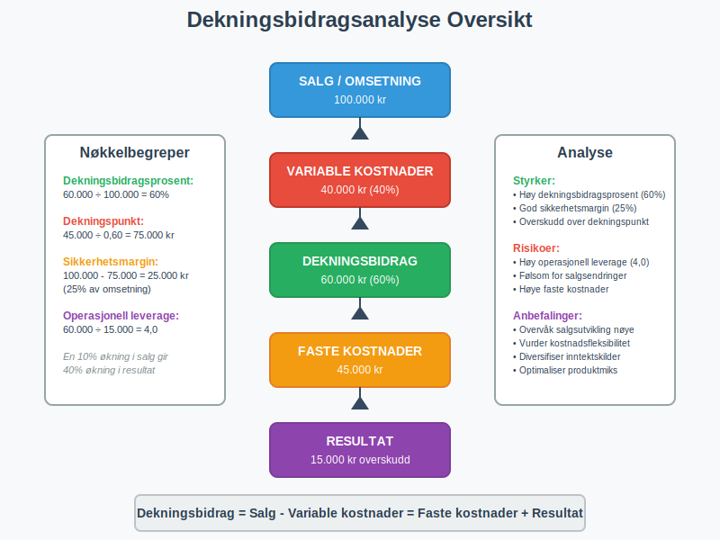

Dekningspunkt (også kalt break-even point) er det punktet hvor en bedrifts totale inntekter er lik totale kostnader, og bedriften verken går med overskudd eller underskudd. Dette er et kritisk verktøy for budsjettering og lønnsomhetsanalyse som hjelper bedrifter å forstå hvor mye de må selge for å dekke alle kostnadene sine.

Hva er Dekningspunkt?
Dekningspunkt representerer det kritiske volumet hvor en bedrift begynner å gå i balanse. På dette punktet er:
- Totale inntekter = Totale kostnader
- Resultat = 0 (verken overskudd eller tap)
- Dekningsbidrag = Faste kostnader
Grunnleggende Komponenter
For å forstå dekningspunkt må vi først forstå de grunnleggende komponentene:
Faste kostnader:
- Kostnader som ikke endres med produksjonsvolum
- Eksempler: husleie, forsikring, faste lønn, avskrivninger
Variable kostnader:
- Kostnader som endres proporsjonalt med produksjonsvolum
- Eksempler: råvarer, provisjoner, frakt
Dekningsbidrag:
- Salgspris per enhet minus variable kostnader per enhet
- Bidrar til å dekke faste kostnader og generere overskudd
Beregning av Dekningspunkt
Det finnes flere metoder for å beregne dekningspunkt, avhengig av om du ønsker resultatet i enheter eller kroner.

Dekningspunkt i Enheter
Formel:
Dekningspunkt (enheter) = Faste kostnader ÷ Dekningsbidrag per enhet
Hvor:
- Dekningsbidrag per enhet = Salgspris per enhet - Variable kostnader per enhet
Dekningspunkt i Kroner
Formel:
Dekningspunkt (kroner) = Faste kostnader ÷ Dekningsbidragsprosent
Hvor:
- Dekningsbidragsprosent = (Dekningsbidrag per enhet ÷ Salgspris per enhet) × 100
Praktisk Eksempel: Bakeri
La oss se på et praktisk eksempel med et bakeri som selger brød:
Gitte data:
- Salgspris per brød: 25 kr
- Variable kostnader per brød: 10 kr (mel, gjær, strøm)
- Faste kostnader per måned: 45.000 kr (husleie, lønn, forsikring)
Beregning:
| Komponent | Beregning | Resultat |
|---|---|---|
| Dekningsbidrag per enhet | 25 - 10 | 15 kr |
| Dekningsbidragsprosent | (15 ÷ 25) × 100 | 60% |
| Dekningspunkt (enheter) | 45.000 ÷ 15 | 3.000 brød |
| Dekningspunkt (kroner) | 45.000 ÷ 0,60 | 75.000 kr |
Tolkning: Bakeriet må selge 3.000 brød eller oppnå 75.000 kr i omsetning hver måned for å gå i balanse.
For en mer omfattende analyse av nullpunktsomsetning, se vår spesialiserte guide som dekker beregningsmetoder, optimalisering og strategier for å oppnå kritisk omsetningsnivå.
Dekningsbidragsanalyse
Dekningsbidragsanalyse er en utvidet versjon av dekningspunkt-analysen som gir dypere innsikt i lønnsomhet.

Dekningsbidrag i Prosent
Dekningsbidragsprosenten viser hvor mye av hver salgskrone som bidrar til å dekke faste kostnader:
Dekningsbidragsprosent = (Dekningsbidrag ÷ Omsetning) × 100
Sikkerhetsmargin
Sikkerhetsmargin viser hvor mye salget kan falle før bedriften går med tap:
Sikkerhetsmargin = Faktisk salg - Dekningspunkt
Sikkerhetsmargin (%) = (Sikkerhetsmargin ÷ Faktisk salg) × 100
Operasjonell Leverage
Operasjonell leverage måler hvor følsom bedriften er for endringer i salgsvolum:
Operasjonell leverage = Dekningsbidrag ÷ Resultat før renter og skatt
Anvendelse av Dekningspunkt
Dekningspunkt-analyse har mange praktiske anvendelser i bedriftsstyring:
1. Prissetting
Dekningspunkt hjelper med å sette riktige priser ved å vise:
- Minimum pris for å dekke kostnader
- Effekt av prisendringer på lønnsomhet
- Konkurransedyktige prisnivåer
2. Kapasitetsplanlegging
Ved å analysere dekningspunkt kan bedrifter:
- Planlegge produksjonskapasitet
- Vurdere investeringer i nytt utstyr
- Optimalisere ressursbruk
3. Produktmiks-beslutninger
For bedrifter med flere produkter:
- Identifisere mest lønnsomme produkter
- Allokere ressurser effektivt
- Eliminere ulønnsomme produktlinjer
4. Budsjett og Prognoser
Dekningspunkt er essensielt for:
- Budsjettering og finansiell planlegging
- Scenarioanalyser (best case, worst case)
- Måling av finansiell ytelse
Begrensninger ved Dekningspunkt-analyse
Selv om dekningspunkt-analyse er et kraftig verktøy, har det visse begrensninger:
Forutsetninger
Analysen bygger på flere forutsetninger som ikke alltid holder i praksis:
- Lineære kostnader: Variable kostnader er konstante per enhet
- Konstant produktmiks: For bedrifter med flere produkter
- Stabil markedssituasjon: Priser og kostnader endres ikke
- Perfekt salg: Alt som produseres blir solgt
Kortsiktig Perspektiv
Dekningspunkt-analyse er primært et kortsiktig verktøy og tar ikke hensyn til:
- Langsiktige strategiske endringer
- Markedsutvikling og konkurranse
- Teknologiske fremskritt
- Endringer i kostnadsstruktur
Avanserte Dekningspunkt-konsepter
Multippel Dekningspunkt
For bedrifter med flere produkter må dekningspunkt beregnes for hele produktporteføljen:
Vektet gjennomsnittlig dekningsbidragsprosent =
Σ (Produktets andel av omsetning × Produktets dekningsbidragsprosent)
Dekningspunkt med Målresultat
For å beregne salgsvolum som kreves for et spesifikt overskudd:
Nødvendig salgsvolum = (Faste kostnader + Ønsket overskudd) ÷ Dekningsbidrag per enhet
Sensitivitetsanalyse
Sensitivitetsanalyse viser hvordan endringer i nøkkelfaktorer påvirker dekningspunkt:
| Endring | Effekt på dekningspunkt |
|---|---|
| Økt salgspris | Lavere dekningspunkt |
| Økte variable kostnader | Høyere dekningspunkt |
| Økte faste kostnader | Høyere dekningspunkt |
| Økt salgsvolum | Ingen direkte effekt på dekningspunkt |
Dekningspunkt i Ulike Bransjer
Tjenestebedrifter
For tjenestebedrifter som konsulentfirmaer:
- Variable kostnader er ofte lave
- Høy dekningsbidragsprosent
- Fokus på kapasitetsutnyttelse
Produksjonsbedrifter
For produksjonsbedrifter:
- Høyere variable kostnader (råvarer)
- Kompleks kostnadsstruktur
- Behov for detaljert kostnadsanalyse
Handelsbedrifter
For handelsbedrifter:
- Variable kostnader = innkjøpspris
- Dekningsbidrag = bruttofortjeneste
- Fokus på omsetningshastighet
Digitale Verktøy for Dekningspunkt-analyse
Moderne regnskapssystemer tilbyr ofte innebygde verktøy for dekningspunkt-analyse:
Regnskapsprogrammer
Mange regnskapsprogrammer inkluderer:
- Automatisk beregning av dekningspunkt
- Grafisk fremstilling av break-even analyse
- Scenariomodellering
- Rapportering og dashboards
Excel-modeller
Excel-baserte modeller er populære for:
- Fleksibel modellering
- Sensitivitetsanalyse
- Grafisk presentasjon
- Integrasjon med andre systemer
Rapportering og Oppfølging
Månedlig Oppfølging
For effektiv bruk av dekningspunkt-analyse bør bedrifter:
- Oppdatere beregninger månedlig
- Sammenligne faktisk med budsjettert dekningspunkt
- Analysere avvik og identifisere årsaker
- Justere prognoser basert på nye data
Nøkkeltall (KPI)
Viktige nøkkeltall relatert til dekningspunkt:
| Nøkkeltall | Formel | Betydning |
|---|---|---|
| Dekningsbidragsprosent | (Dekningsbidrag ÷ Omsetning) × 100 | Lønnsomhet per salgskrone |
| Sikkerhetsmargin | Faktisk salg - Dekningspunkt | Buffer mot tap |
| Kapasitetsutnyttelse | (Faktisk produksjon ÷ Maksimal kapasitet) × 100 | Effektivitet |
Strategiske Implikasjoner
Kostnadsstruktur-optimalisering
Dekningspunkt-analyse kan guide strategiske beslutninger om:
Outsourcing vs. Internalisering:
- Konvertere faste kostnader til variable
- Redusere finansiell risiko
- Øke fleksibilitet
Automatisering:
- Øke faste kostnader (investeringer)
- Redusere variable kostnader (arbeidskraft)
- Påvirke dekningspunkt og risikoprofil
Vekststrategier
Ved vekst må bedrifter vurdere:
- Skalering av faste kostnader
- Endringer i kostnadsstruktur
- Nye dekningspunkt for utvidede operasjoner
Sammenheng med Andre Regnskapskonsepter
Dekningspunkt-analyse er tett knyttet til flere andre regnskapskonsepter:
Kostnadsregnskap
- Kostnadsfordeling mellom faste og variable kostnader
- Aktivitetsbasert kostnadsberegning (ABC)
- Standardkostnader vs. faktiske kostnader
Budsjett og Prognoser
- Budsjettering basert på dekningspunkt-analyse
- Rullende prognoser
- Scenarioplanlegging
Finansiell Analyse
- Lønnsomhetsanalyse
- Likviditetsanalyse
- Investeringsanalyse
Praktiske Tips for Implementering
1. Datainnsamling
For nøyaktig dekningspunkt-analyse:
- Klassifiser kostnader korrekt (faste vs. variable)
- Samle historiske data for trendanalyse
- Oppdater regelmessig for å reflektere endringer
2. Systemintegrasjon
- Integrer med regnskapssystem
- Automatiser datainnsamling
- Lag standardiserte rapporter
3. Organisatorisk Forankring
- Tren personalet i dekningspunkt-konsepter
- Etabler rutiner for regelmessig analyse
- Kommuniser resultater til relevante beslutningstakere
Konklusjon
Dekningspunkt er et fundamentalt verktøy for bedriftsstyring som gir kritisk innsikt i lønnsomhet og finansiell risiko. Ved å forstå og anvende dekningspunkt-analyse kan bedrifter:
- Optimalisere prissetting og produktmiks
- Planlegge kapasitet og investeringer
- Redusere finansiell risiko gjennom bedre forståelse av kostnadsstruktur
- Forbedre beslutningsgrunnlag for strategiske valg
For å få maksimal nytte av dekningspunkt-analyse er det viktig å:
- Holde data oppdatert og nøyaktig
- Forstå begrensningene ved analysen
- Kombinere med andre finansielle verktøy
- Tilpasse analysen til bedriftens spesifikke situasjon
Dekningspunkt-analyse bør være en integrert del av enhver bedrifts finansielle planlegging og oppfølging, sammen med andre viktige regnskapskonsepter som budsjettering, kostnadsanalyse og lønnsomhetsmåling.